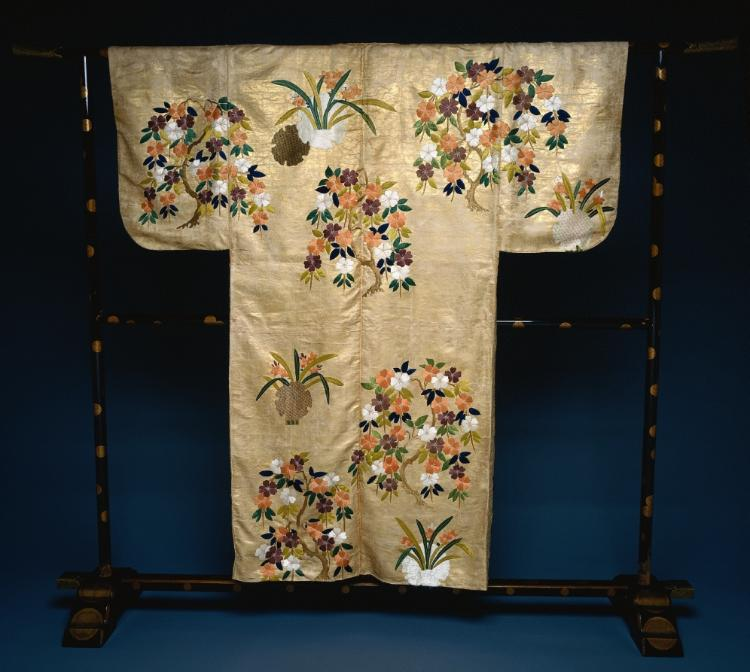

Samurai threads ·
Самурайские нити
Дебетовые и кредитные карты, займы — коротким путём. Здесь только официальные предложения банков: выбирай спокойно, заявка оформляется на сайте банка.

Шлем кабуто, Япония, период Эдо — Cleveland Museum of Art
- Заявка — на сайте банка. Мы не собираем данные
- Без звонков и спама. Никаких форм на этом сайте
- 32 предложения. Обновлено 26 августа 2026
- Бесплатно. Условия — те же, что у банка напрямую
Дебетовые карты
Карты на каждый день: кешбэк, платёжные стикеры, доставка курьером. Жми «Оформить» — попадёшь на официальную страницу банка.
Выбери свой путь
Кредитки и займы вынесены на отдельные страницы — у каждой дороги свой раздел.



Красная нить
В японской легенде акай ито — красная нить судьбы — невидимо связывает людей с тем, что им предназначено. Здесь она короче: три узла — и нужная карта у тебя.
-
Выбери предложение
Дебетовая, кредитка или займ — в каталоге только действующие продукты банков и МФО.
-
Жми «Оформить»
Кнопка ведёт на официальный сайт банка. На этом сайте нет ни одной формы — данные вводятся только у банка.
-
Получи карту или деньги
Банк рассмотрит заявку и привезёт карту курьером или зачислит деньги на счёт.